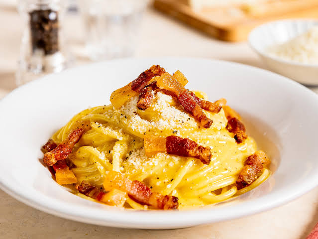

Home
Carbonara

Descrizione
Spaghetti alla Carbonara
Un classico intramontabile della cucina romana, semplice ma ricco di sapore. Gli spaghetti vengono conditi con un mix cremoso di uova, Pecorino Romano e pepe nero, arricchito dalla pancetta croccante. Un piatto veloce da preparare, ma dal gusto intenso e avvolgente, perfetto per ogni occasione.
Ingredienti
- 400g di spaghetti
- 150g di pancetta
- 3 uova
- 100g di Pecorino Romano grattugiato
- Pepe nero q.b.
- Sale q.b.
Preparazione
- Cuocere gli spaghetti in abbondante acqua salata secondo le istruzioni sulla confezione.
- Nel frattempo, rosolare la pancetta in una padella fino a renderla croccante.
- In una ciotola, sbattere le uova con il Pecorino Romano grattugiato e una generosa macinata di pepe nero.
- Scolare gli spaghetti al dente e unirli alla pancetta nella padella, mescolando bene.
- Togliere la padella dal fuoco e aggiungere il composto di uova e formaggio, mescolando rapidamente per ottenere una crema senza far cuocere le uova.
- Servire immediatamente, completando con altro Pecorino e pepe nero a piacere.